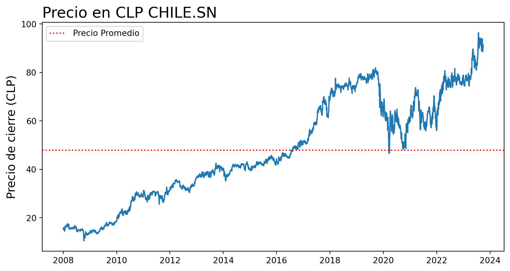
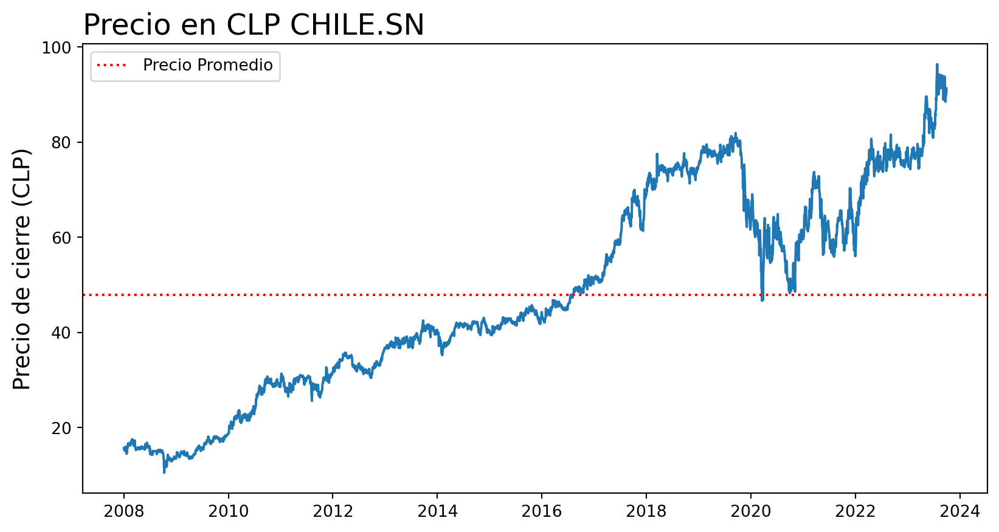
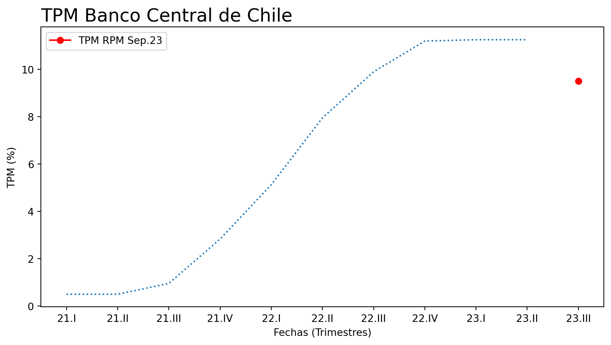
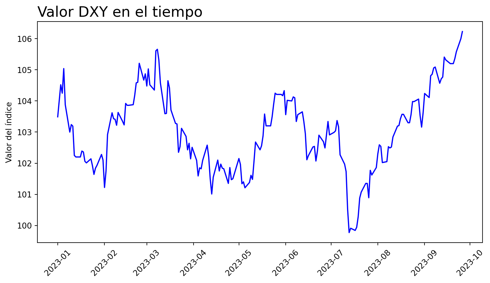
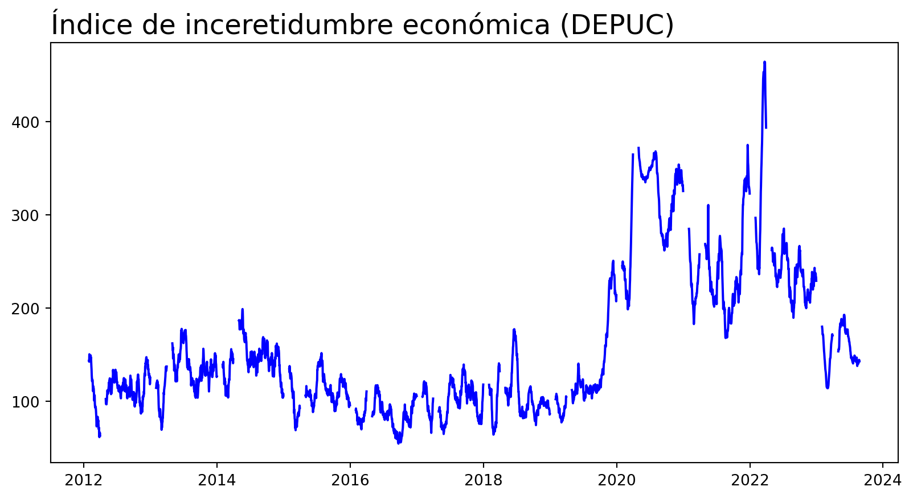
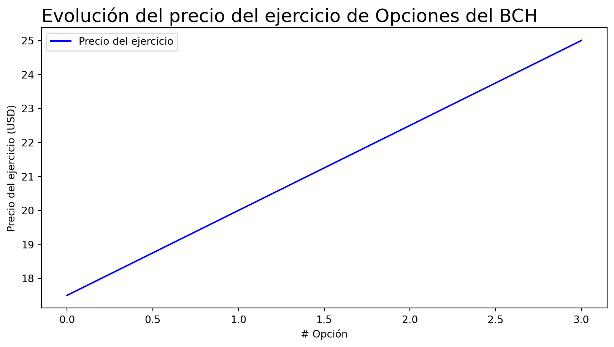

2023-09-28
El sector de estudio en este caso particular corresponde al sector bancario. Este último incluye a todas las instituciones financieras conocidas como “bancos” que ayudan a las personas guardar su dinero. Los bancos le ofrecen la oportunidad a las personas de abrir cuentas para el propósito que necesiten, ya sea de ahorro o para inversión. Los servicios principales que ofrecen estas instituciones incluyen almacenaje, transferencia, extender crédito o el manejo de riesgos asociados a mantener diversos niveles de riqueza. Esta industria es una que es sustentable en el tiempo, de hecho, según un estudio por (Isnurhadi et al. 2022) que revisa diferentes factores que afectan al crecimiento sustentable de la industria bancaria, es que esta última logra mantener un crecimiento sustentable a pesar de estar expuesta a muchos factores de riesgo.
El activo a estudiar corresponde a la acción del Banco de Chile. Este es uno de los bancos comerciales más grandes del país. Al igual que otros bancos en el país, ofrece una gran variedad de productos bancarios y servicios financieros, dentro de los cuales están banca en línea, servicios de inversión y portales internacionales de negocio. El objetivo de dichas soluciones financieras es lograr satisfacer las necesidades de los clientes en cualquier etapa de la vida de estos.
En el siguiente gráfico se observa la evolución del precio de la acción en la Bolsa de Santiago.

| Periodo | Rentabilidad |
|---|---|
| Mes actual | -3.06% |
| Mes anterior | -0.43% |
| Año actual (YTD) | 14.04% |
| Año anterior | 32.21% |
Las instituciones financieras llevan a cabo funciones muy importantes en la economía tales como: mecanismos de pagos, juntan la oferta con la demanda en los mercados financieros, manejan instrumentos financieros complejos, entre otros (Anbar y Alper 2011). De estas entidades, los bancos son las más importantes en muchas economías. Esto último ya que como intermediario financieros, proveen un conjunto diverso de servicios, y la eficiencia de este proceso de intermediación puede afectar al crecimiento económico. De hecho, la insolvencia de un banco puede tener efectos muy negativos para el sistema financiero de un país, como causar una crisis bancaria, que corresponde a la quiebra subsecuente de otros bancos comerciales debido a problemas de liquidez.
Si bien la motivación por la cual se escogió este activo se respalda por razones no numéricas, los números presentados en la sección anterior de definición de activo ayudaron un poco a la elección. Esto último ya que los retornos de la acción desde inicio de año hasta la fecha (YTD) fueron muy positivos, al igual que los retornos del año anterior.
Las tres variables/activos que se definirán en esta sección corresponden a la TPM que define el Banco central de Chile, el DXY (US Dollar Index) y el DEPUC (Índice de Incertidumbre Económica y Política).
Para la Tasa de Política Monetaria, esta corresponde a la tasa a la que el Banco Central del Chile le presta capital a los bancos comerciales del país («Política Monetaria» 2023). Por lo tanto, si esta tiene valores altos los bancos reciben un mayor interés en sus depósitos, por ende, tienen más incentivos para entregar a sus clientes mejores tasas de interés en instrumentos financieros de ahorro, como por ejemplo, depósitos a plazo. Pero, por otro lado, se encarece la prestación de fondos, lo cual afecta a las tasas de interés de los créditos. Luego, los factores mencionados corresponden a formas en las que la TPM puede afectar al Banco de Chile.

El gráfico ilustra la trayectoria de la Tasa de Política Monetaria (TPM) a lo largo de los distintos trimestres. Se destaca el punto rojo, que representa la TPM correspondiente a septiembre, derivada de la última reunión de política monetaria. A través del gráfico, se puede apreciar que la tasa mantuvo niveles elevados durante un período, pero recientemente ha iniciado una tendencia descendente, la cual probablemente va a continuar en los próximos meses, debido a los comunicados que ha hecho el Banco Central (B. C. de Chile 2023).
Luego, con respecto al DXY, es una medida del valor del dólar americano con respecto a una canasta de divisas foráneas («What is the Dollar Index?» 2023). El valor de este índice puede afectar al sector bancario o particularmente al Banco de Chile, debido a que uno de los objetivos que tiene el Banco Central es controlar el tipo de cambio, ya que este último afecta a la inflación. Por lo que si el valor del índice se encuentra alto, es decir que el dolar se valorizado con respecto a otras divisas, probablemente el Banco Central se enfocará en una política monetaria más restrictiva, subiendo la TPM, la cual se mencionó cómo afecta a los bancos comerciales.

En este último gráfico se aprecia el cambio del índice desde principio de año hasta la fecha.
Por último, el DEPUC, es una medida general de percepción e incertidumbre económica que se construye a partir de la frecuencia de tweets que contienen palabras relacionadas con la economía general, acciones políticas, incertidumbre o coyuntura inicial, publicadas diariamente por diversas cuentas («Un índice de incertidumbre político-económica basado en Twitter» 2023). Entonces, en base a esto, el valor que toma esta medida puede afectar al Banco en múltiples áreas tales como: asignación de créditos, inversiones, entre otros.

En este se puede apreciar la evolución del índice DEPUC en Chile entre los años 2012 y 2023. Un aspecto a destacar es cómo el valor de esta medida comienza a incrementar en el año 2019, lo cual puede ser explicado por la pandemia y el estallido social, ambos, eventos que causaron un gran nivel de incertidumbre en el país. A pesar de esto último, se observa como el índice actualmente se encuentra en niveles pre-pandemia.
En lo que respecta a acciones comunes para el caso del Banco de Chile se tiene la acción del mismo que se mencionó con anterioridad en la sección de definición. Particularmente, de acuerdo con (B. de Chile 2023b), las acciones del Banco de Chile se dividen en:
Que se distribuyen como sigue:
Un fenómeno que se puede ver en esta distribución de acciones es el hecho que existen diferentes series. Esto hay que recordar que se suele realizar generalmente con el objetivo de diferenciar el derecho a voto.
Otro detalle es que también existen acciones que se transan en la bolsa de Nueva York, cuyo precio está en dólares. El nemotécnico por el cual transan estas acciones en el NYSE es BCH.
En lo que respecta a bonos, según (B. de Chile 2023a) la entidad realizó una emisión el 12 de junio del presente año, de bonos bajo su nuevo marco de financiamiento sostenible (ESG framework), cuyos recursos se destinaron a emprendimientos liderados por mujeres. Este tipo de prestamos “verdes” se podría clasificar como que tienen una clausula de protección positiva, ya que de cierta forma se especifica una acción que la empresa debe cumplir. Esto último, con el objetivo de mejorar la relación con los acreedores de dicha deuda.
Normalmente, este tipo de bonos suelen tener métricas asociadas cuyo cumplimiento afecta directamente la tasa del bono. Por lo que, se pueden clasificar de cierta forma como bonos de tasa flotante.
En lo que respecta a emisiones históricas, el 4 de mayo del año 2011 el Banco de Chile realizó un aumento de capital donde se subastaron 1.398.023.524 acciones de un accionista controlador. Estas acciones fueron ofrecidas a los accionistas del banco y a la Sociedad Matriz del Banco de Chile. Debido a que se ofrecieron a los accionistas del Banco, esta se puede categorizar como una oferta directa de derechos de suscripción.
Para llevar a cabo esta oferta, la junta del Banco acordó la colocación 2.081.685.335 acciones. Esta parte de la emisión corresponde a las etapas de conferencias previas a la suscripción, y presentación y aprobación de registro (Ross et al. 2022). Luego siguen las etapas de fijación del precio de la emisión, oferta pública y venta, y estabilización del mercado. Ahora, como se mencionó anteriormente que esta emisión corresponde a una oferta directa de derechos de suscripción, por lo que para la etapa de oferta pública y venta, las nuevas acciones se ofrecen directamente a los accionistas de la empresa.
Un derivado relacionado a la acción del Banco de Chile corresponde a los que se transan en la bolsa de Nueva York o NYSE, por sus siglas en inglés («Banco de Chile (BCH) Opciones de la cadena - Yahoo Finanzas» 2023). La evolución del precio del ejercicio de estas opciones se puede ver en el siguiente gráfico.

Cabe destacar que las opciones presentadas en esta sección corresponden opciones de compra o call. Este derivado puede ser de importancia para la acción del banco por varias razones, pero una de ellas es que los volúmenes de compra o venta de estas opciones le puede servir a los inversionistas para posiblemente anticipar futuros movimientos del activo subyacente, que en este caso es la acción.
Un detalle a considerar es que las opciones que se mencionaron se transan en la bolsa de Nueva York, esto da como evidencia lo pequeño que es el mercado de derivados en Chile, ya que al momento de buscar información de estos, no se encontraron resultados.
Para la determinación de los pesos del portafolio compuesto por las acciones del grupo, se buscó calcular el portafolio tangencial. Entonces, con los retornos esperados \(\mathbf{\mu}\) y la matriz de covarianza de los activos que componen el portafolio \(\mathbf{\Sigma}\), se calcularon los pesos \(\mathbf{w}\) de cada activo. El problema de optimización a maximizar fue el siguiente:
\[ \max_{\mathbf{w}} \left\{\mathbf{\mu} - \delta \mathbf{w}^{\intercal}\mathbf{\Sigma}\mathbf{w} \right\} \] Sujeto a: \[\begin{align} &\sum_{i} w_{i} = 1 &\\ &0\leq w_{i}\leq 1 & \end{align}\]
Si bien no se está maximizando el ratio de Sharpe necesariamente, se penaliza la función objetivo con un grado \(\delta\) a la función objetivo por la varianza del portafolio. Luego, de acuerdo al factor de penalización se puede definir un portafolio con mayor o menor grado de aversión al riesgo, pues mientras mayor sea el factor, más se penalizará la función objetivo en función del riesgo y viceversa.
En este caso, se decidió tomar un perfil de inversión conservador, dada la recesión que vive la economía chilena en la actualidad. También, se decidió que la información a utilizar para calcular los retornos y sus varianzas sería a partir del 2021, con el fin de considerar los últimos efectos de la pandemia y no la pandemia en su totalidad, por ser un evento muy aislado que altera los resultados. También, se consideró este horizonte de información por ser una inversión a corto plazo, y por lo tanto es mejor considerar las situaciones más recientes de los activos que toda la información histórica, pues la información reciente es más representativa.
Con todo esto, fue posible obtener la información de los retornos, definir el grado del factor de penalización y maximizar los retornos en función del riesgo asumido. Así, los resultados de los pesos de cada activo en el portafolio fueron los siguientes:
| Acción | Pesos |
|---|---|
| Banco de Chile | 68.3% |
| Parque Arauco | 10.3% |
| COPEC | 21.4% |
Cuyo rendimiento esperado es de 1.113%.